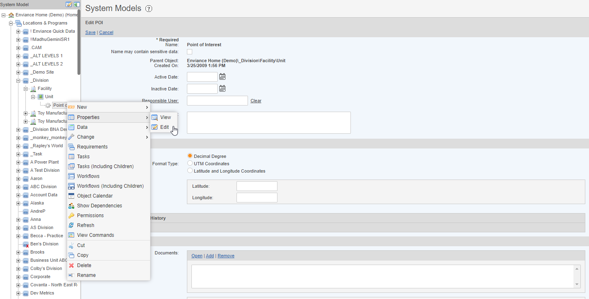
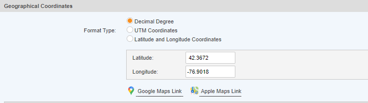
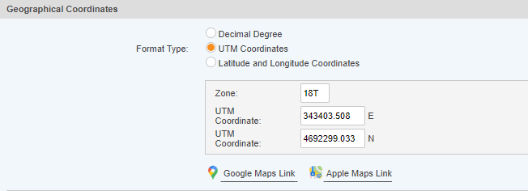
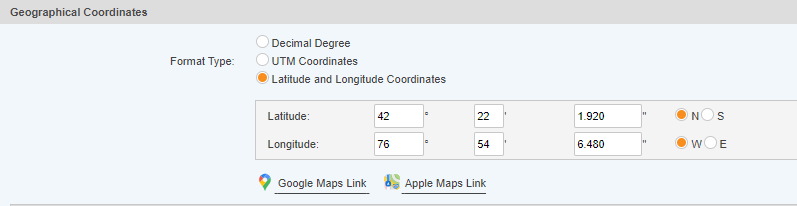
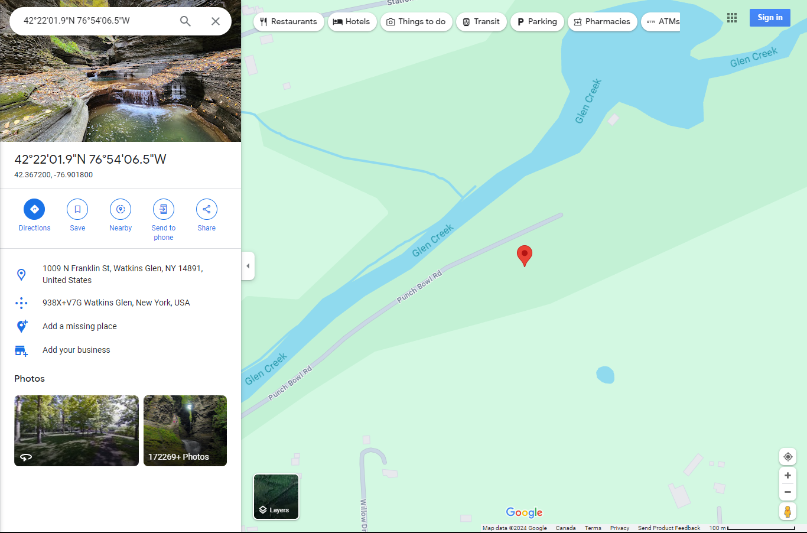
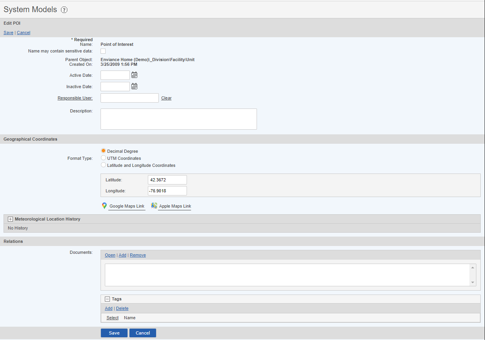

In the System model users can now input Geographical coordinates for an object (Division, Facility/Program, Unit/Element, or Point of Interest (POI) in either Decimal Degrees, UTM Coordinates, or Latitude and Longitude Coordinates. Inputting these values allows an object to display on the Map View Interface found in the WAB and used as an Object selector.
To Input Grographical Coordinates for an Object


Which ever Format type you decide to select and fill out, the system will automatically convert the values entered to the other two formats. You can see this by selecting the other Format Types, the textboxes to fill out will be filled in based on the initial values you input.



If you would like to change the coordinate on the map itself you can click and drag the red map pin icon to a location you prefer, the coordinates will appears at the bottom center of the map. You can copy these values into the coordinate textboxes.

These Objects will now display on the Map View Interface in the WAB if the location being viewed is near the object.